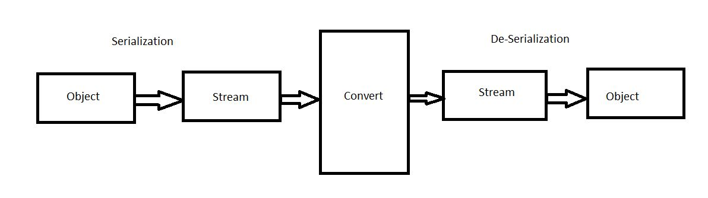
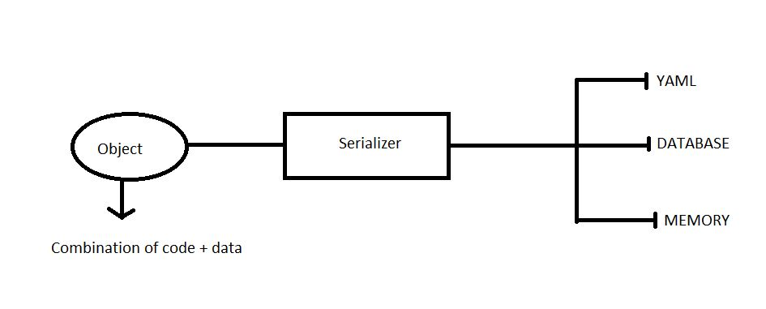
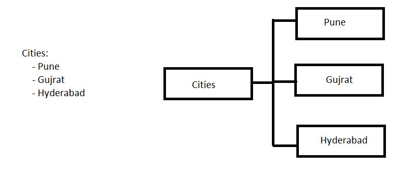
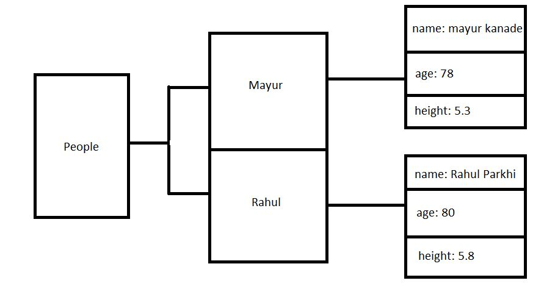
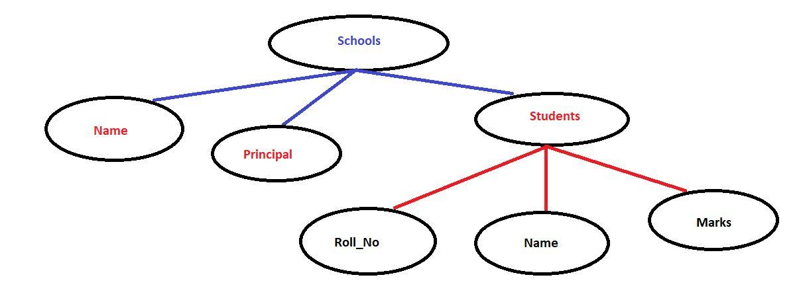
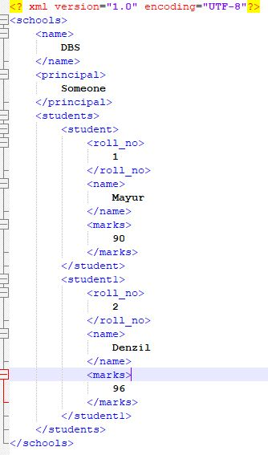
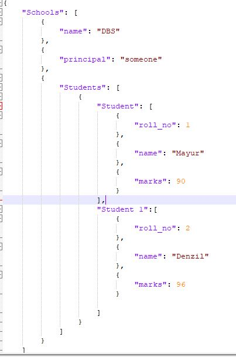
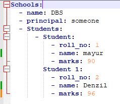

YAML files in Devops.
- YAML : YAML ain't markup language.
- It's not a programming language. It's just a data format used to exchange data.
- It is similar to XML and JSON.
- In YAML you can store only data and not commands. It is known as serialization of data.
- Serialization: a process of converting a data objects (into a complex data structure into a stream of bytes) into a stream of storage on physical device.

Data Serialization.

Process of Serialization.
- Data Serialization Languages: YAML,XML and JSON.
- Use:
- configuration files for Docker and Kubernetes.
- Logs,Cache.
- Benefits of YAML:
- Human Readable and Simple.
- It has strict syntax- Indentation is important.
- Easily convertible to JSON or XML
- Most programming Languages use it.
- More powerful when representing a complex data.
- Parsing is easy. (Parsing means reading a data.)
- YAML always present in key-value pairs.
- It represents list structures also
#lists
-apple
-mango
-banana
- YAML is case sensitive.
- YAML can use block-type structure.

Block Structure in YAML.
- Spaces are very important in YAML.
- YAML file ended with triple dots (...) i.e document is ended here.
- You can objects into another format like:
- cities: [pune,gujrat] ===> this is called serial flow.
- {mango: "yellow fruit", age:56} ===> key-value pairs.
- we can put 3 dots (...) in between two or more seprate data.
- YAML does not provide multi-line comment.
- How many ways we can represent string in YAML?
- myself: mayur kanade
- fruit: "apple"
- job: 'Software-Engineer'
- How to consider object for multiple lines?
e.g.: bio |
hey my name is mayur kanade
I am very good.
- How to write single line into multiple lines?
message >
this would be consider
as a single line.
YAML datatypes:
- String Variables:
name: mayur kanade
fruit: "apple"
job: 'Software-Engineer'
bio |
hey this is your friend
you'll definitely love me online.
how to specify the datatypes for data in YAML?
- integer
zero: !!int 0
positiveNum: !!int 45
negativeNum: !!int -45
binaryNum: !!int ob1011
octalNum: !!int 06754
hexNum: !!int 0*45
commaValue: !!int +54_000 # as 54,000 will be displayed.
- floating point numbers
marks: !!float 58.89
infinite: !!float .inf
not a num: .nan
- boolean value
booleanValue: !!boolean No
- String as a type
name: !!string "Best Luck!"
- Null datatype
surname: !!Null Null # or null NULL
~: this is a null key
- dates and times
date: !!times 2023-05-24 # if time is not specified then default is UTC.
Advanced Data Types in YAML.
- Sequence Datatype
student: !!seq
-marks
-roll_no
-name
- Sparse Sequence
sparse seq:
-hey
-how
-
-NULL
-sap
- Nested Sequence
-
-apple
-mango
-grapes
-
-marks
-roll_no
-name
- key-value pair is called as maps. We use !!map datatype
nested mappings: a map within a map.
!!map
name: mayur kanade
role:
age:36
job:'SDE-II'
# alternative to above or same for above is
!!map
name: mayur kanade
role: {age:56, job:'SDE-II'}
- Pairs datatype: keys may have a duplicate values.
# !!pairs
# this will be an array of hashtables.
!!pairs
-job: student
-job: Teacher
-job: SDE-II
#same as: !!pairs [job: Student, job: Teacher, job: SDE-II]
- Set datatype: !!set will allow you to have unique values, there is no key-value pair (only items.) There is no duplicate.
names: !!set
? mayur
? yogesh
? yash
? deven
- #Dictionary: !!omap The entire Sequence represented as values.
e.g.:
people: !!omap
Mayur:
name: Mayur Kanade
age: 78
height: !!float 5.3
Rahul:
name: Rahul Parkhi
age: 80
height: !!float 5.8

Dictionary Datatype.
- Anchors: Re-using some properties again and again.
likings: &likes
fav-fruit: mango
dislikings: grapes
person1:
name: kunal
<< *likes
person2:
name: rahul
<< *likes
disliking: berries # here, overrides grapes to berries.
person3:
name: apoorv
<< *likes
person4:
name:Yash
<< *
Representation of files for the following Architecture:

- Representation in XML Format

- Representation in JSON Format

- Representation in YAML format
